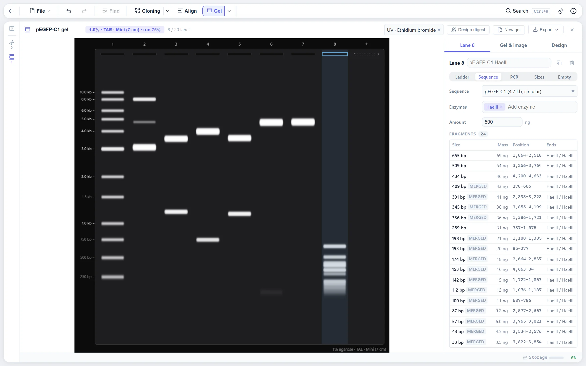

What goes in a lane
A gel is an item in the explorer: a set of running conditions and an ordered row of up to 20 lanes, each holding one sample, the way a real comb leaves wells empty. There is no Run button. The gel is re-simulated on every change, and every change is an undo step. A lane holds:
- A ladder, from the built-in set or one you add.
- A sequence, uncut or cut with any enzymes. The digest dialog's "Run on gel" starts a gel from the current digest.
- A PCR product: a template and two primers from the primer library. Any other product the pair could make is shown fainter.
- Typed-in band sizes, to compare against a photo of a real gel.
- A protein, on an SDS-PAGE gel, with its predicted band.
Mass is tracked from the load (500 ng for a digest, 100 ng for a PCR, 50 ng per typed band) down to every fragment, which gets the share of the load its length is of the whole. So brightness means something: a 300 bp fragment of a 6 kb digest is faint because it would be. Uncut circular DNA splits into its forms with their different mobilities: a clean miniprep is 80 % supercoiled, 17 % nicked and 3 % linear by default, with other presets offered. A circular sequence cut once is one full-length linear molecule. Sites that Dam or Dcm methylation blocks are skipped, by the same rule the cloning digest uses, so the two always agree.

The migration model
Mobility relative to free DNA follows a sigmoid in log size:
r(L) = m + (1 − m) / (1 + (L / Lc)α)
Small fragments slip through the pores and approach a relative mobility of 1. Large ones reptate at a limiting mobility m, so everything above the resolution window piles into a compression zone below the wells instead of spreading out, as it does on a real gel. Lc is the size the gel separates best: 1,900 bp at 1 % agarose in TAE, falling with the agarose percentage to the power 1.8 as the pores shrink. TBE sieves a little harder, which is why it resolves small fragments better. Agarose runs from 0.5 % to 3 %.
The run is timed by the bromophenol blue front, as it is at the bench ("run until the dye is three quarters down"), which stands in for voltage times time. The dye has a fixed relative mobility, so the DNA size it co-migrates with falls out of the model: about 350 bp in 1 % TAE and 100 bp in 2 %, matching loading-dye charts. Fragments that would travel past the end of the gel have run off and are listed as such. Three formats set the run length: mini at 60 mm, midi at 130 mm and large at 180 mm.
The parameters were tuned against published ladder images and dye co-migration tables. The model is approximate by design: good enough to judge whether two bands will separate, not a substitute for a real gel.
How bands spread and merge
Each molecule lands at a distance from the well with a Gaussian spread, in millimetres, from three sources: stacking out of the well, since DNA entering the gel stacks into a layer much thinner than the well; diffusion, which grows with distance and hits small fragments hardest; and overloading, where a band holding hundreds of nanograms is visibly fatter.
Molecules whose centres are closer than 1.6 mean sigmas merge into one band, so 3,000 and 2,950 bp read as a single, brighter band, as they would for real. The merged band's centre is mass-weighted and its spread follows the law of total variance. Bands under 2 ng are below what ethidium bromide shows and are drawn faint.
Ladders
Each ladder band carries a mass. Most commercial ladders load roughly equal mass per band, with one or two reference bands at about 2.5x to orient by eye, and the built-in ladders follow that pattern for a 500 ng load. They are representative, not any one vendor's datasheet. Lambda cut with HindIII is a digest of a single molecule, so its fragments are equimolar and their masses scale with size, which is why its 125 bp band is barely visible on a real gel too. You can add your own ladder with its sizes and masses. Protein ladders, the common 10 to 250 kDa and broad-range sets, load about 2.5 µg.
Looks and export
The gel is imaged through a look: ultraviolet with ethidium bromide, the same inverted, blue light with SYBR Safe or GelGreen, or a schematic of flat vector bands for figures. A look is a colour ramp from bare gel to saturated band, and exposure is adjustable over four stops. The canvas on screen, the high-resolution PNG, the SVG and the PDF all paint the same scene, so they cannot drift apart. The lane table exports as CSV, and the PDF carries it under the image.
Hover a band to see what is in it, read the size at any height off the cursor line, and cut a band out: the fragment opens as a new sequence with its features carried over and its ends described, the way a band is cut from a gel and purified.
The diagnostic digest designer
Given the sequences a sample might be, the clone you wanted, the empty vector, the insert backwards, the designer finds the enzymes that tell them apart on this gel. Every single enzyme and, optionally, every pair from a pool is tried on every candidate, and each digest is run through the same migration and band model the gel draws. So "distinct" means distinct at this agarose percentage and this run length, not distinct in a table of fragment sizes.
A design scores well on three things. The candidates' band patterns sit far apart, measured as the smallest, over all pairs of candidates, of the largest gap between a band in one lane and the nearest band in the other; under 1 mm is hard to tell by eye and 3 mm counts as fully distinct. Each pattern is readable, meaning at most seven bands, inside the gel's useful range, none merged and none under 250 bp. And it needs one familiar enzyme rather than two.
Pairs are only tried among enzymes that cut every candidate at most four times, and no design may cut a candidate more than eight times, which keeps a full search over the 6-cutters fast. With a single candidate only readability counts: a clean confirmatory digest. Applying a design lays the gel out for it, a ladder that fits and then a lane per candidate. The cloning workspace hands its product and the wrong outcomes to the designer directly.
Where to find it
New gel from the explorer, or "Run on gel" in the restriction digest dialog. Click a lane to select it, drag wells to reorder, and click the empty well after the last lane to add one. Left and Right pick a lane, Alt with them moves it, Delete removes it. The inspector on the right holds the running conditions and the selected lane.
Limits
- The model is fitted by eye to published images and dye tables, not derived from a physical theory of the gel. It predicts whether bands separate, not their exact positions to the millimetre.
- Supercoiled and nicked forms use fixed relative mobilities per preset. Real supercoiled mobility depends on the plasmid, the buffer and the voltage.
- Built-in ladders are representative mass patterns, not any vendor's datasheet. Add your own for an exact match.
References
- Stellwagen NC (2009) Electrophoresis of DNA in agarose gels, polyacrylamide gels and in free solution. Electrophoresis 30 Suppl 1:S188-S195. The sigmoid in log size and the reptation limit the model follows.